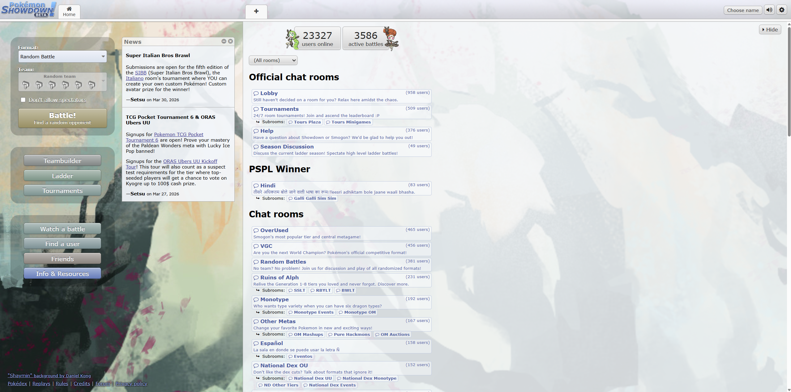

Competitive Pokemon

Introduction
Pokemon needs no introduction, it's a world renowned game series after all. There is so much that people love in this franchise. Maybe it's the designs of these wonderful little creatures, maybe it's the wacky and colorful characters that populate its fictional world. But the aspect many people find most compelling, is the sheer fun of the battle system. Pokemon features a complex and multifaceted turn based combat system that allows for so many unique and unusual strategies and ideas. But as you play more, the in-game npc trainers tend to fall behind, after all, when you are whipping out a strategy that involves items, multiple pokemon, and niche moves, the team of 4 water types doesn't feel as threatening as it used to. So what's a real gamer to do about this? Well gamefreak has a solution from the very first game, why not play against other people?

What is Competitive Pokemon?
The competitive scene of Pokemon was born from the collective efforts of fans, who simply wanted to push their gameplay to the next level, and go up against an opponent who could actually challenge them. Over time, this small community grew and grew until eventually it was big enough for the pokemon company themselves to sanction and organize tournaments. Competitive pokemon ultimately can be divided into two major categories; The official format VGC, standing for Video Game Championship, and the unofficial Smogon tier based singles. These formats have various similarities and differences that draw people in for differing reasons.
Smogon Singles
A 6v6 singles format built on an underlying desire for fair and balanced matches, where any pokemon you love could have SOME use, the format consists of several different “tiers” each of which allow different pokemon to be used, some even having unique restrictions and regulations for balance.
VGC
The Official 4v4 doubles format. This format is defined by much more unusual strategies and faster matches, due to the nature of doubles. The banlist is restricted to only a small group of legendary pokemon, and there is only one sub-format available at a time. If you are interested in complex single turns rather than the switching and setting up mindgames of singles, then you may be interested in the official format of pokemon.

While it may be tempting to dive straight into the competitive scene of your choice, it can often be incredibly difficult to make sense of the competitive metagame at a first glance, let alone while learning the format. Luckily there is a wealth of information to draw from when first learning about this game. Various sources of information and expertise on competitive pokemon have been linked below for your educational benefit: